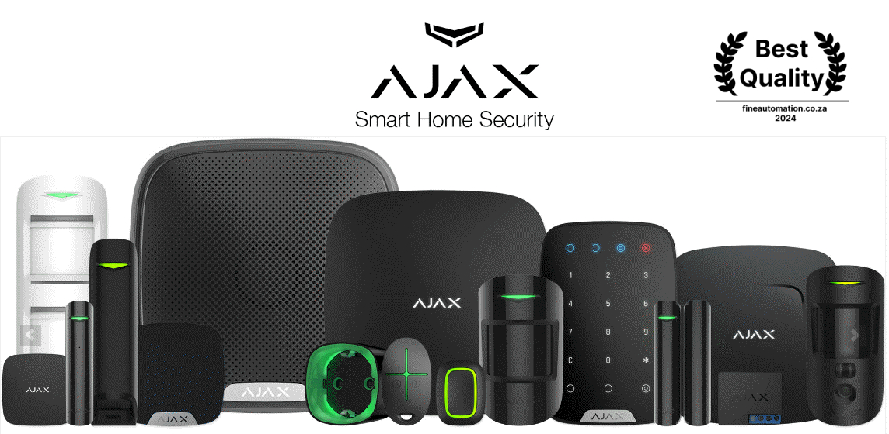
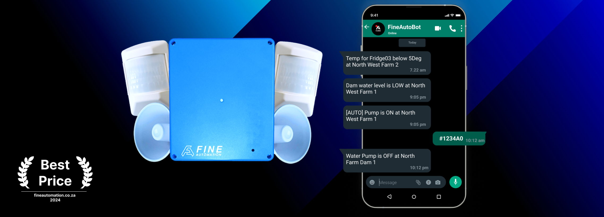
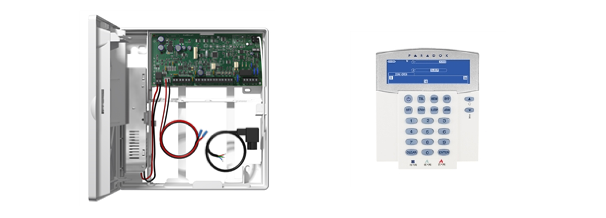
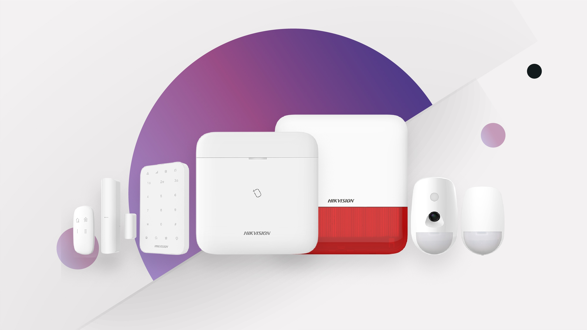

Wireless Alarm Systems
Best wireless alarm systems
5 of the best wireless alarm systems
Michael Slade de Lange


Feb 2024

Choosing the Right Wireless Alarm: Your Search Simplified
Sifting through countless wireless alarm systems can feel overwhelming. But finding the perfect fit doesn't have to be a research marathon. Let's cut to the chase and uncover what truly matters.
What users (and maybe you, the user) prioritize:
- Quality: You want a system that stands the test of time, built with reliable components.
- Affordability: Security shouldn't break the bank. Finding the right balance between features and cost is key.
- Reliability: Peace of mind comes from knowing your alarm won't let you down when it matters most.
If you install alarms as an installer or technician, you may also look at:
- Ease of installation and programming: Saving time on setup means happier clients and more completed projects.
- Learning curve: A user-friendly system means less hand-holding and happier end users.
Keeping these criteria in mind, we've compiled a list of 5 top wireless alarm systems currently on the market. Stay tuned for the breakdown!
The High-Tech Choice: Unveiling the AJAX Wireless Alarm System
For those prioritizing top-of-the-line security without budgetary constraints, the AJAX wireless alarm system might be your perfect match.
Despite its premium price tag, it remains a popular choice for homeowners seeking advanced protection.
Cutting-Edge Features and Convenience
AJAX boasts a comprehensive feature set, living up to its "bells and whistles" reputation. Motion detectors with built-in cameras, smoke detectors, wireless sirens, and more offer a multi-layered shield.
Users manage everything through a user-friendly app, and the system accommodates virtually any configuration you desire.
The central unit, or "Hub," connects seamlessly via Wi-Fi, Ethernet, or 2G. Higher-priced options upgrade to 3G or 4G connectivity. With up to 5 years of battery life for indoor sensors and 3 years for outdoor ones, reliability is another
advantage.
Top Quality with a Caveat
Earning our "best quality" award, the AJAX system impresses with its modern aesthetics and advanced technology. However, installation can be complex, particularly when adding peripherals like FSK radios or control units for external
monitoring.
The system lacks dedicated output ports for these, requiring additional purchases.
Explore Further
Learn more about the AJAX system and its comprehensive features on their official website:https://ajax.systems/
IDS Onyyx Wireless Alarm System
The IDS wireless alarm system offers flexibility through various sizes and variants. Starting at a lower price point compared to the AJAX system,
it caters to budget-conscious homeowners seeking basic security solutions.
Key Features:
- User-friendly operation via keypad or mobile app
- Central "Hub" unit connects to control rooms through 2G or 4G
- Supports up to 20 sensors for comprehensive coverage
- Easy sensor pairing through QR code scanning with the mobile app
Battery Life Concerns:
Wireless sensors have a relatively short battery life of only 2 years, requiring more frequent replacements compared to competitors.
Currently, no outdoor sensors are listed on the official website, limiting its use for comprehensive home protection.
Overall:
The IDS system provides a budget-friendly entry into wireless security. However, its short battery life and lack of outdoor sensor options might be dealbreakers for users seeking long-term, comprehensive protection.
Consider your security needs and budget carefully before deciding.
VENUS Wireless Alarm System: Affordable Security Tailored for South Africa

The VENUS wireless alarm system stands out for its unique approach, prioritizing both affordability and convenience for the South African market.
Here's why it might be the ideal choice for you:
Price and Innovation:
VENUS delivers the most affordable wireless alarm system we've reviewed, making security accessible to a wider audience.
By focusing on essential features, it avoids unnecessary costs and complexities.
Intuitive Control with WhatsApp:
Ditch dedicated apps, VENUS seamlessly utilizes WhatsApp, an app already on most phones.
Control core alarm functions and receive real-time updates through secure WhatsApp messages.
Long-lasting Power:
Enjoy 5+ year battery life for indoor sensors, minimizing replacements and maintenance. Optex outdoor sensors boast a 4-year lifespan with the VENUS transmitter.
Simplicity is Key:
Installation and programming take under 10 minutes, eliminating technical hassles.
Ideal for those seeking essential security features without unnecessary complexities.
Flexibility and Expansion:
Optional radio ports allow connecting directly to security companies. Compatible with FineAutomations' control room, offering additional monitoring options.
Who is VENUS for?
Budget-conscious homeowners seeking essential security without frills. Users comfortable with WhatsApp for everyday interaction. Those prioritizing fast and easy installation.
Remember: While VENUS offers exceptional value, consider your individual needs. If advanced features or professional monitoring are crucial, explore other options.
Further Information:
Visit the VENUS website to learn more and see if it's the perfect fit for your home security needs.
Paradox Magellan Wireless Alarm

The Paradox Magellan wireless alarm system offers a wide range of variations and features to suit diverse needs. With numerous compatible sensors, it caters to various configurations. However, user-friendliness might be a concern.
Strengths:
- Flexibility: Numerous variations and sensors to personalize your security solution.
- Established Brand: Paradox enjoys a strong reputation and long history in the industry.
- Multiple Control Options: Operates with both keypad and mobile app for user convenience.
Weaknesses:
- Complex Setup: Programming and system specification can be challenging due to an outdated website and intricate software, according to installers.
- Unclear Battery Life: Battery life information isn't readily available on their website, requiring login details. We estimate it to be average compared to other systems on this list.
Recommendation:
The Paradox Magellan offers versatility and brand prestige. However, if user-friendliness is a priority, you might want to consider alternatives with simpler setup processes and readily available information. Weigh your security needs against your technical comfort level before deciding.
HIKVISION AX Pro

HIKVISION, renowned for CCTV cameras, ventures into the alarm market with the AX Pro series. Let's see if it offers security and value for your home.
Highlights:
- Cost-Effectiveness: Positions itself as a slightly more affordable alternative to the AJAX system, offering similar features at a reduced price.
- Comprehensive Security: Supports various wireless sensors like sirens, motion detectors with cameras, panic buttons, smoke detectors, and temperature sensors for a customizable security shield.
- Convenient Control: Operate the system through the HIKVISION keypad or manage it remotely via their app.
Considerations:
Average Battery Life: While not exceptional, the advertised 4-year battery life for indoor and outdoor passives falls within the industry average.
Limited Connectivity: Currently relies on 2G Wi-Fi, which might raise concerns about future-proofing and potential compatibility issues.
Price Variability: The overall price depends on chosen sensors and add-ons, requiring careful tailoring to your needs.
Who is it for?
Price-conscious buyers: Seeking similar features to the AJAX system at a potentially lower cost.
Tech-savvy users: Comfortable with a combination of app and keypad control.
Those prioritizing basic to moderate security: With its range of sensors, it can be scaled to various protection levels.
Remember: While affordability is appealing, assess features, connectivity options, and long-term support before deciding. Compare it to competitors and consider professional installation if needed.
Further Exploration:
Visit the HIKVISION website to explore its specific features, pricing structure, and compatibility details to determine if it aligns with your security needs and budget.